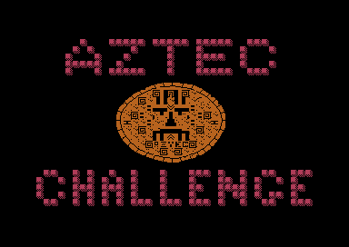
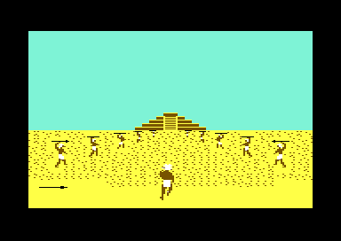

<meta charset="utf-8">
<meta name="viewport" content="width=device-width, initial-scale=1">
<title>Aztec Challenge</title>
<link rel="preconnect" href="https://fonts.googleapis.com">
<link rel="stylesheet" href="https://fonts.googleapis.com/css2?family=Lato:wght@400;700;900&family=IBM+Plex+Mono:wght@400;500&display=swap">
<style>
:root{
  --bg:#23262d; --paper:#e9e7e1; --surface:#ffffff; --surface-2:#f1efea; --line:#d5d3cc; --line-soft:#e0ded8;
  --ink:#2f3136; --ink-soft:#55585f; --ink-mute:#80838a; --chip:#2f3136; --chip-ink:#ffffff;
  --fb:'Lato',system-ui,sans-serif; --fm:'IBM Plex Mono',ui-monospace,Menlo,monospace;
  --col:1080px; --gx:68px; --fs:17px; --lh:1.6; --hw:900; --h1:46px; --h2:26px; --sy:48px; --pp:26px; --r:10px;
}
*{box-sizing:border-box}
html{background:var(--bg);min-height:100%}
body{background:var(--paper);color:var(--ink);font-family:var(--fb);font-size:var(--fs);line-height:var(--lh);max-width:var(--col);margin:0 auto;min-height:100vh;padding:0 0 4rem}
h1,h2,h3{font-weight:var(--hw);letter-spacing:-.01em;margin:0}
.wrap{padding:0 var(--gx)}
.hero{padding:48px var(--gx) 8px}
.eyebrow{font-family:var(--fm);font-size:12px;letter-spacing:.08em;text-transform:uppercase;color:var(--ink-mute);margin:0 0 10px}
.hero h1{font-size:var(--h1);line-height:1.15;margin:0 0 14px}
.hero .sub{margin:0 0 .6em;color:var(--ink-soft)}
section{padding:var(--sy) 0 24px}
.fig{font-family:var(--fm);font-size:12px;letter-spacing:.08em;text-transform:uppercase;color:var(--ink-mute);margin:0 0 10px}
h2.t{font-size:var(--h2);margin-bottom:12px}
h3{font-size:18px;margin:26px 0 10px}
.plate{background:var(--surface);border:1px solid var(--line);border-radius:var(--r);padding:var(--pp)}
.cap{font-size:14px;color:var(--ink-mute);margin-top:14px;line-height:1.55}
code{font-family:var(--fm);font-size:.82em;background:var(--chip);color:var(--chip-ink);border-radius:4px;padding:2px 6px;white-space:nowrap}
canvas.az-px{display:block;image-rendering:pixelated;max-width:100%;height:auto;border-radius:4px}
.az-ctl{display:flex;flex-wrap:wrap;gap:8px;align-items:center;margin:14px 0 0}
.az-ctl button,.az-ctl select,.az-ctl label{font:inherit;font-size:14px}
.az-ctl button{border:1px solid var(--line);background:var(--surface-2);border-radius:6px;padding:4px 10px;cursor:pointer}
.az-ctl button[aria-pressed="true"]{background:var(--chip);color:var(--chip-ink)}
.az-ctl input[type=range]{width:220px}
.az-out{font-family:var(--fm);font-size:14px;margin-top:12px;line-height:1.6;color:var(--ink-soft)}
.az-gal{display:grid;grid-template-columns:repeat(auto-fill,minmax(150px,1fr));gap:14px}
.az-gal figure{margin:0;font-size:13px;color:var(--ink-soft);text-align:center;line-height:1.35}
.az-gal figure b{display:block;color:var(--ink);font-size:14px;margin-top:6px}
.az-gal figure span{font-family:var(--fm);font-size:12px;color:var(--ink-mute)}
.az-gal canvas{margin:0 auto}
.az-row{display:flex;flex-wrap:wrap;gap:18px;align-items:flex-start}
table.az-tab{border-collapse:collapse;width:100%;font-size:15px}
table.az-tab td,table.az-tab th{border-bottom:1px solid var(--line-soft);padding:6px 8px;text-align:left;vertical-align:top}
table.az-tab th{font-weight:700;color:var(--ink-soft)}
.az-sw{display:inline-block;width:12px;height:12px;border-radius:2px;margin-right:4px;vertical-align:-1px;border:1px solid #0003}
@media (max-width:640px){:root{--gx:16px}}
.az-shot{display:block;width:320px;max-width:100%;image-rendering:pixelated;border-radius:4px}
</style>
<!-- tabs -->
<header class="hero">
  <p class="eyebrow">Commodore 64 · 1983 · Cosmi</p>
  <h1>Aztec Challenge</h1>
  <p class="sub">Seven deadly levels in 28 KB, each its own small program, and a soundtrack that starts as a low pulse and adds its melody and voices as the player gets further, because the music is the level's progress counter made audible.</p>
</header>
<main class="wrap">

<section id="game">
  <p class="fig">01 · The game</p>
  <h2 class="t">One escape from an Aztec sacrifice, in seven levels</h2>
  <p>The player is chosen as a sacrifice and runs for freedom: through a gauntlet of spear throwers, up the temple stairs under rolling blocks, through the temple's trapped rooms, past its creatures, across a floor of booby-trapped tiles, through a lake of piranhas and over a bridge with holes in it. Each level is a short dash with five lives; losing all five sends the player back to the scorecard to try the same level again. Win all seven and they start again, faster, for four phases, the last at night.</p>
  <p>Paul Norman wrote it for the Commodore 64 in 1983, after Robert T. Bonifacio's Atari game of the same name; Cosmi published it, and U.S. Gold sold the cassette in Britain. The game is one file of 28,671 bytes, read from tape by the computer's own slow loader in about six minutes.</p>
  <div class="plate"><div class="az-row"></div>
  <p class="cap">The title, and the first level, the Gauntlet, in VICE.</p></div>
</section>

<section id="music">
  <p class="fig">02 · The music</p>
  <h2 class="t">Music: the soundtrack is the level's progress, played aloud</h2>
  <p>Every level counts its progress in stages, 0 to 9 (the byte <code>$45</code>), and calls one routine each time the count goes up (<code>$6530</code>). That routine changes the music: at stage 1 the three voices switch from soft triangle waves to sawtooth; at stage 2 the melody comes in; at 3 the title tune returns, faster; at 4 a third tune takes over and a voice drops out; at 5 it comes back, and at 6 it turns to a sawtooth too. A player who hears the melody start knows they are a fifth of the way through, which is what the manual means when it says the music will "indicate the extent of your progress". Hopaztec is the one level that never calls it, so its music never builds.</p>
  <div class="plate">
    <div id="az-sid"></div>
    <p class="cap">Each button runs the game's own code on the kit's 6502: the start-up's sound set-up (<code>$1000</code>), the menu's (<code>$1121</code>), a level's start (<code>$1CA0</code>) and the stage routine once for each stage, then the interrupt at <code>$1C00</code> 60 times a second, as the computer's own timer calls it. <code>test_music.js</code> holds every button against the same code run along the game's own path. The menu's pulse is very low, about 15 to 55 hertz: laptop and phone speakers barely play it, and headphones do.</p>
  </div>
  <p>The music player itself is 155 bytes (<code>$1C00</code>-<code>$1C9A</code>). It steps through a tune six bytes at a time, the high and low byte of each voice's pitch, one step every few interrupts (<code>$36</code>), and starts again at the address in <code>$30</code>/<code>$31</code> when it reads a byte <code>$FF</code>. It never touches a voice's waveform or volume: those are set once by the start-up from the table at <code>$41C0</code> and changed only by the levels and the stage routine. That is why the same tune sounds different at different stages.</p>
</section>

<section id="frame">
  <p class="fig">03 · One frame</p>
  <h2 class="t">The Gauntlet, rebuilt from memory</h2>
  <p>The play screen is characters and sprites, nothing else: the sand, the spear throwers and the temple are characters from the set at <code>$3800</code>, and the runner and the spears are sprites. The picture below is not a screenshot. It is drawn from the memory and the video registers of one frame recorded in play.</p>
  <div class="plate">
    <canvas id="az-frame" class="az-px"></canvas>
    <div class="az-ctl" id="az-frame-bar"><button type="button" data-v="all" aria-pressed="true">Everything</button><button type="button" data-v="chars" aria-pressed="false">Characters only</button></div>
    <p class="cap">One frame recorded with <code>kit/c64/frame.py</code> in VICE on 8 November 2026 and drawn by the site's <code>C64.drawFrame</code>: all 104,448 pixels match the emulator's picture of the same frame. The other six levels are on the <a href="levels.html">Levels</a> tab.</p>
  </div>
</section>

<section id="levels">
  <p class="fig">04 · Seven programs</p>
  <h2 class="t">Each level is its own program, run from the scorecard</h2>
  <p>The scorecard (<code>$1195</code>) shows both players' level, phase and score and the level's four lines of instructions (from <code>$1600</code>), and waits for the stick. Then <code>$122E</code> copies the phase's settings into zero page and jumps to the level's own code by the level's number. The level sets up its own screen, sprites and controls and runs its own loop until the runner wins or loses five lives, and then jumps to <code>$1300</code>, which scores the attempt and goes back to the scorecard. Nothing is shared between the levels but a few routines and the music.</p>
  <div class="plate"><table class="az-tab" id="az-lv"></table>
  <p class="cap">The dispatch at <code>$12A2</code> and the size of each level's code in the listing. The level and the phase are kept as the digit characters themselves, '1' to '7' (<code>$31</code>-<code>$37</code>), so the scorecard prints them straight from memory.</p></div>
</section>

<section id="hero">
  <p class="fig">05 · The runner</p>
  <h2 class="t">The runner is two sprites, and the levels see it from three sides</h2>
  <p>A hardware sprite is 24 by 21 pixels, so every level makes its hero from two, an upper and a lower half moved together. The Gauntlet and the Stairs show the runner from behind, the Temple, the Vermin and the Bridge from the side, Hopaztec from above at an angle and the Piranha swimming. Collisions come from the video chip, which sets a bit for each sprite that touches another; the levels read that register and decide from its bits, which is why some of them only notice a hit on one half (<a href="discoveries.html#legs">Discoveries</a>). Every shape, animated, is on the <a href="graphics.html">Graphics</a> tab.</p>
  <div class="plate"><div class="az-row" id="az-heroes"></div>
  <p class="cap">The first pose of each level's hero, drawn from the listing's sprite shapes in the level's colours.</p></div>
</section>

<section id="controls">
  <p class="fig">06 · Controls</p>
  <h2 class="t">One joystick, seven meanings</h2>
  <p>The game reads only the joystick in port 2 (<code>$DC00</code>, fourteen times in the code), and each level reads it its own way. The manual tells most of it; the code adds a few things it did not say.</p>
  <div class="plate"><table class="az-tab">
    <tr><th>Level</th><th>Up</th><th>Down</th><th>Left</th><th>Right</th><th>Fire</th><th>Read at</th></tr>
    <tr><td>Gauntlet</td><td>jump</td><td>duck</td><td>nothing</td><td>nothing</td><td>nothing</td><td><code>$6219</code></td></tr>
    <tr><td>Stairs</td><td>move left</td><td>move left</td><td>move left</td><td>move right</td><td>move right</td><td><code>$71A0</code></td></tr>
    <tr><td>Temple</td><td>stop</td><td>stop</td><td>stop</td><td>jump</td><td>jump</td><td><code>$7700</code></td></tr>
    <tr><td>Vermin</td><td>high jump</td><td>low jump</td><td>nothing</td><td>nothing</td><td>nothing</td><td><code>$6B10</code></td></tr>
    <tr><td>Hopaztec</td><td>hop forward</td><td>hop back</td><td>hop left</td><td>hop right</td><td>nothing</td><td><code>$732A</code></td></tr>
    <tr><td>Piranha</td><td>swim up</td><td>swim down</td><td>swim left</td><td>swim right</td><td>dive</td><td><code>$1DE0</code></td></tr>
    <tr><td>Bridge</td><td>high jump</td><td>low jump</td><td>middle jump</td><td>nothing (but scores)</td><td>nothing</td><td><code>$7D10</code></td></tr>
  </table>
  <p class="cap">From each level's reading code. In the Gauntlet any input held for 8 passes of the loop makes the runner fall. On the scorecard any direction or fire starts the level, and RUN/STOP starts the whole game again. F1 and F3 on the menu choose one or two players, read through the computer's own keyboard routine.</p></div>
</section>

<section id="score">
  <p class="fig">07 · Scoring</p>
  <h2 class="t">A win pays for the lives left, and every attempt pays 10 points an achievement</h2>
  <p>When a level ends, <code>$1300</code> looks at the lives lost (<code>$02</code>). Five lost means the level was failed: the score gets only the achievements. Fewer means it was won: <code>$1400</code> adds 1,000 points with no life lost, 200 less for each life lost, and then the achievements. Achievements are counted in one byte (<code>$68</code>) by each level its own way: a spear dodged, a creature touched, a room crossed, a hop forward (and one taken away for a hop back). <code>$1456</code> pays 10 points for each, and 10 more.</p>
  <div class="plate">
    <div class="az-ctl"><label>Lives lost <select id="az-sc-lost"><option>0</option><option>1</option><option>2</option><option>3</option><option>4</option><option>5</option></select></label><label>Achievements <input type="number" id="az-sc-ach" min="0" max="255" value="12" style="width:5em"></label></div>
    <div class="az-out" id="az-sc-out"></div>
    <p class="cap">The arithmetic of <code>$1400</code> and <code>$1456</code>, in binary-coded decimal as the game keeps its eight-digit scores (<code>$60</code>-<code>$67</code>). Checked in VICE: the Gauntlet won with no life lost and no achievements added 1,010; five lives lost with none added 10.</p>
  </div>
  <p>With two players the turn passes after every attempt, won or lost (<code>$1360</code>), not only after five lives as the manual says.</p>
</section>

<section id="progress">
  <p class="fig">08 · Progress and difficulty</p>
  <h2 class="t">Every level counts to nine its own way</h2>
  <p>Each level moves the progress stage <code>$45</code> on by its own measure, and the stage both builds the music and ends the level. The phase's 16 settings, copied in as each level starts, set how fast things come; the <a href="levels.html#phases">Levels</a> tab has them all.</p>
  <div class="plate"><table class="az-tab">
    <tr><th>Level</th><th>A stage is</th><th>Won at</th><th>Where</th></tr>
    <tr><td>Gauntlet</td><td>88 steps of the run; the temple grows a stage</td><td>the call after stage 8</td><td><code>$62E0</code></td></tr>
    <tr><td>Stairs</td><td>128 counts of the climb</td><td>8 stages</td><td><code>$6E45</code></td></tr>
    <tr><td>Temple</td><td>1, 2, 4 or 6 rooms, by phase</td><td>stage 9</td><td><code>$75DB</code></td></tr>
    <tr><td>Vermin</td><td>112 characters of scrolling</td><td>stage 9</td><td><code>$6AF1</code></td></tr>
    <tr><td>Hopaztec</td><td>(no stages)</td><td>reaching tile 44, the doorway</td><td><code>$7320</code></td></tr>
    <tr><td>Piranha</td><td>two passages off the edge of the lake</td><td>stage 9</td><td><code>$1AB8</code></td></tr>
    <tr><td>Bridge</td><td>1,024 passes of its loop</td><td>stage 9</td><td><code>$7C6B</code></td></tr>
  </table></div>
</section>

</main>
<footer style="margin:16px 0 0;padding:22px var(--gx) 0;border-top:1px solid #e0ded8;font-family:'IBM Plex Mono',ui-monospace,Menlo,monospace;font-size:12px;color:#80838a"><a href="https://github.com/gamesexplained/gamesexplained" style="color:#1f5fa8;text-decoration:none">GitHub</a> · <a href="https://discord.gg/3V9GWyRDWV" style="color:#1f5fa8;text-decoration:none">Discord</a><br>© Games Explained contributors. Write-ups, facts and symbol maps are available under <a href="https://creativecommons.org/licenses/by-sa/4.0/" style="color:#1f5fa8;text-decoration:none">CC BY-SA 4.0</a>; code under <a href="https://opensource.org/licenses/MIT" style="color:#1f5fa8;text-decoration:none">MIT</a></footer>
<script src="../../lib/c64.js"></script>
<script src="../../lib/cpu6502.js"></script>
<script src="../../lib/sid.js"></script>
<script>
/* az-music */
// createDriver for C64Sid: Aztec Challenge's music, the game's own code run on the kit's 6502
// (C64Cpu, from ../../lib/cpu6502.js, which sid.js passes to createDriver) over the listing's
// bytes in AZ_DRIVER_RANGES. A button sets the music up the way the game does for that moment:
// the start-up at $1000-$103D (the SID's 25 values from $41C0, the title's tune $5700), then for
// the levels the menu's set-up at $1121-$1155 (tune $5F00, three triangle voices), a level's
// start ($1CA0) and the stage changer $6530 once for each stage up to the button's, with the
// stage in $45, as each level calls it while the player gets on. Each play() is one interrupt:
// the game's handler at $1C00, entered through the KERNAL's vector at $0314 and left through its
// exit at $EA31, which the simulator stands in for. The KERNAL's interrupt comes 60 times a
// second (CIA 1 timer A, latch $4025: a period of 16,422 cycles). A stage's new tune starts when
// the tune playing reaches its end mark, as in the game; AZ_TUNES' start says where the button
// starts the tune itself, so the button plays the stage's music at once.
const AZ_DRIVER_RANGES = [[0x1000, 0x115A], [0x1C00, 0x1CBF], [0x41C0, 0x41D8], [0x4900, 0x4BFF], [0x5700, 0x57FF], [0x5F00, 0x5FEF], [0x6530, 0x658A]];
const AZ_TUNES = [
  { name: 'The title', stage: -1 },
  { name: 'The menu, and every level as it starts', stage: 0 },
  { name: 'Stage 1: the same pulse on sawtooth voices', stage: 1 },
  { name: 'Stage 2: the melody comes in', stage: 2, start: 0x5F30 },
  { name: 'Stage 3: the title tune, faster', stage: 3, start: 0x5700 },
  { name: 'Stage 4: tune C, voice 3 off', stage: 4, start: 0x4900 },
  { name: 'Stage 5: tune C with voice 3 back', stage: 5, start: 0x4900 },
  { name: 'Stage 6: tune C, voice 3 on a sawtooth', stage: 6, start: 0x4900 },
];
const AZ_PERIOD = 16422;
function createDriver(D, C64Cpu) {
  const base = new Uint8Array(0x10000);
  for (const [ad, bytes] of D.mem) base.set(bytes, ad);
  const sid = new Uint8Array(25);
  let m, cpu, writes = [];
  const io = {
    read(ad) { throw new Error('read $' + ad.toString(16)); },
    write(ad, val) {
      if (ad >= 0xD400 && ad < 0xD800) {             // the SID answers every 32 bytes up to $D7FF
        const r = (ad - 0xD400) & 0x1F;
        if (r < 25) { sid[r] = val; writes.push(r, val); }
        return;
      }
      if (ad === 0xD01A || ad === 0xD020 || ad === 0xD021) return;   // the interrupt mask, the colours
      throw new Error('write $' + ad.toString(16));
    },
  };
  const upto = (from, to) => { cpu.pc = from; cpu.run({ until: to, maxSteps: 100000, hooks: { 0xFFD2: (c) => { c.rts(); } } }); };
  return {
    sid,
    get writes() { return writes; },
    get mem() { return m; },
    init(t) {
      const c = D.list[t];
      m = base.slice(); cpu = new C64Cpu.CPU(m, { port: 0x37, io });
      sid.fill(0); writes = [];
      upto(0x1000, 0x103E);                         // the start-up: the SID, $0314, the title's tune
      if (c.stage >= 0) {
        upto(0x1121, 0x1158);                       // the menu's set-up
        cpu.call(0x1CA0, {}, { maxSteps: 1000 });   // a level starts
        for (let s = 1; s <= c.stage; s++) { m[0x45] = s; cpu.call(0x6530, {}, { maxSteps: 1000 }); }
      }
      if (c.start) { m[0x34] = c.start & 0xFF; m[0x35] = c.start >> 8; m[0x33] = 0; }
    },
    stop() { writes = []; },
    play() {
      writes = [];
      cpu.irq(null, { kernal: true, maxSteps: 10000 });
    },
    playing() { return true; },
  };
}
// end of az-music
</script>
<script>
const AZ_FRAME = {"schema":1,"standard":"PAL","lines":312,"cycles":63,"about":"","vic":[194,213,194,233,157,219,96,223,255,255,57,234,73,18,0,0,8,27,0,213,21,15,216,0,31,125,240,12,15,12,5,255,240,247,249,241,243,249,241,241,241,240,240,241,241,241,241],"cia2":[151,63],"cpu":[47,55],"writes":[[49,49,53248,195,195],[49,55,53250,195,195],[49,61,53252,158,158],[50,4,53248,196,196],[50,10,53250,196,196],[50,16,53252,159,159],[50,22,53249,214,214],[50,28,53251,234,234],[50,34,53253,220,220],[285,60,53248,197,197],[286,3,53250,197,197],[286,9,53252,160,160],[286,15,53248,198,198],[286,21,53250,198,198],[286,27,53252,161,161],[286,33,53249,215,215],[286,39,53251,235,235],[286,45,53253,221,221]],"colour":"CwsLCwsLCwsLCwsLCwsLCwsLCwsLCwsLCwsLCwsLCwsLCwsLCwsLCwsLCwsLCwsLCwsLCwsLCwsLCwsLCwsLCwsLCwsLCwsLCwsLCwsLCwsLCwsLCwsLCwsLCwsLCwsLCwsLCwsLCwsLCwsLCwsLCwsLCwsLCwsLCwsLCwsLCwsLCwsLCwsLCwsLCwsLCwsLCwsLCwsLCwsLCwsLCwsLCwsLCwsLCwsLCwsLCwsLCwsLCwsLCwsLCwsLCwsLCwsLCwsLCwsLCwsLCwsLCwsLCwsLCwsLCwsLCwsLCwsLCwsLCwsLCwsLCwsLCwsLCwsLCwsLCwsLCwsLCwsLCwsLCwsLCwsLCwsLCwsLCwsLCwsLCwsLCwsLCwsLCwsLCwsLCwsLCwsLCwsLCwsLCwsLCwsLCwsLCwsLCwsLCwsLCwsLCwsLCwsLCwsLCwsLCwsLCwsLCwsLCwsLCwsLCwsLCwsLCwsLCwsLCwsLCwsLCwsLCwsLCwsLCwsLCwsLCwsLCwsLCwsLCwsLCwsLCwsLCwsLCwsLCwsLCwsLCwsLCwsLCwsLCwsLCwsLCwsLCwsLCwsLCwsLCwsLCwsLCwsLCwsLCwsLCwsLCwsLCwsLCwsLCwsLCwsLCwsLCwsLCwsLCwsLCwsLCwsLCwsLCwsLCwsLCwsLCwsLCwsLCwsLCwsLCwsLCwsLCwsLCwsLCwsLCwsLCwsLCwsLCwsLCwsLCwsLCwsLCwsLCwsLCwsLCwsICAgICAgICAgICAgICAgICAgICAgICAgICAgICAgICAgICAgICAgICAgICAgICAgICAgICAgICAgICAgICAgICAgICAgICAgICAgICAgICAgICAgICAgICAgICAgICAgICAgICAgICAgICAgICAgICAgICAgICAgICAgICAgICAgICAgICAgICAgICAgICAgICAgICAgICAgICAgICAgICAgICAgICAgICAgICAgICAgICAgICAgICAgICAgICAgICAgICAgICAgICAgICAgICAgICAgICAgICAgICAgICAgICAgICAgICAgICAgICAgICAgICAgICAgICAgICAgICAgICAgICAgICAgICAgICAgICAgICAgICAgICAgICAgICAgICAgICAgICAgICAgICAgICAgICAgICAgICAgICAgICAgICAgICAgICAgICAgICAgICAgICAgICAgICAgICAgICAgICAgICAgICAgICAgICAgICAgICAgICAgICAgICAgICAgICAgICAgICAgICAgICAgICAgICAgICAgICAgICAgICAgICAgICAgICAgICAgICAgICAIPCAcADwQPBA8FDwMOAAsECwIPAAcFDA==","ram":[{"a":1024,"b":"AAAAAAAAAAAAAAAAAAAAAAAAAAAAAAAAAAAAAAAAAAAAAAAAAAAAAAAAAAAAAAAAAAAAAAAAAAAAAAAAAAAAAAAAAAAAAAAAAAAAAAAAAAAAAAAAAAAAAAAAAAAAAAAAAAAAAAAAAAAAAAAAAAAAAAAAAAAAAAAAAAAAAAAAAAAAAAAAAAAAAAAAAAAAAAAAAAAAAAAAAAAAAAAAAAAAAAAAAAAAAAAAAAAAAAAAAAAAAAAAAAAAAAAAAAAAAAAAAAAAAAAAAAAAAAAAAAAAAAAAAAAAAAAAAAAAAAAAAAAAAAAAAAAAAAAAAAAAAAAAAAAAAAAAAAAAAAAAAAAAAAAAAAAAAAAAAAAAAAAAAAAAAAAAAAAAAAAAAAAAAAAAAAAAAAAAAAAAAAAAAAAAAAAAAAAAAAAAAAAAAAAAAAAAAAAAAAAAAAAAAAAAAAAAAAAAAAAAAAAAAAAAAAAAAAAAAAAAAAAAAAAAAAAAAAAAAAAAAAAAAAAAAAAAAAAAAAAAAAAAAAAAAAAAAAAAAAAAAAAAAAAAAAAAAAAAAAAAAAAAAAAAAAAAAAAAAAAAAAAAAAAAAAAAAAAAAAAAAAAAAAAAAAAAAAAAfHwAAAAAAAAAAAAAAAAAAAAAAAAAAAAAAAAAAAAAAAAAAAAAAAB8ff7/fXwAAAAAAAAAAAAAAAAAAAAAAAAAAAAAAAAAAAAAAAAAAHx9fX3+/319fXwAAAAAAAAAAAAAAAAAAAB6eXp7e3t6ent7eUFAej8+PTx7eXt5vL2+v3nAwXp6e3t6eXt5e3t7e0tKSUh6eUdGeXo7RHtDQnt6e3p6enp7wsN7xLt6esbHenrIycrLe3p6UVB7eXsoTnl5TUx5e3l6e3t6ent7e3l7eszNenvOu3p6etDRent5elVUenl7TVJ5eXt7e3p5e3p5e3p6e3t5e3l5e3t70s15e3rU1Xp6eXlYV3l7eXp7e3l5enp7e3l5e3l6e3p5e3p5enp7eXt7e3t519h6e3lbWll7eXl6e3l6e3t7enl7enl5e3t6eXt7e3t5e3t7e3t5e9na23l5eXp6e3t7e3t7eXl6eXt5e3p5ent5enp5e3t5e3t7eXp5e3t5eXp6e3t7e3t5eXp6e3t5enp7e3t7eXl6ent7e3t7e3l5enp7e3t6e3t7e3t7e3t7e3l5ent7e3t5e3l7eXt6eXt6e3t7eXp6enl7e3l7enp7e3t7e3t7eXl6eXp7e3t7e3t5eXp7e3t7e3l5enp7e3t7e3t5eXp7e3t7eXp6e3t5enp7e3t7e3p6e3t7e3t6eXl5eXt7enl7enl6ent7e3t5eQ=="},{"a":2040,"b":"jI2Kiw=="},{"a":8832,"b":"AAAAAAAIAKqqAAAIAAAAAAAAAAAAAAAAAAAAAAAAAAAAAAAAAAAAAAAAAAAAAAAAAAAAAAAAAAAAAAAAAAAA"},{"a":8896,"b":"AAAAIAAAqqoAIAAAAAAAAAAAAAAAAAAAAAAAAAAAAAAAAAAAAAAAAAAAAAAAAAAAAAAAAAAAAAAAAAAAAAAA"},{"a":8960,"b":"AAFAAgFQCoFUOqAVCoAFKqAFqqgUKqBUKtVQCtVQKlVAA1VAAFVAAVVAAVUABVUABVUAFVUAFVcAVF8AAAAA"},{"a":9024,"b":"UGqAUKqAQKqgQKqgUGqgUGqkEFqkAF+VABVVABUVABUVAAUFAAUFABUVABQUAFRUAVBQBUFABAFAAQBQAQAB"},{"a":14336,"b":"//////////8="},{"a":14656,"b":"BQEAAAAAAgI="},{"a":14808,"b":"AQEAAAAAAADwgEBQgIBAQA8AAQAAAAAAAADwgEBAUFAAAD8BAQEBAAAAAAD8QKCQAAAAAD8BAQFAgIBQEBAAAAAAAQEBAQEBkEBQVFVQoKA="},{"a":14896,"b":"/0AAoJCQQFD/AQEFBQQFBQAAAAAAwPDAAAAAAAAD/wMAAAAAAAD/BQAAAAAAAA8AoGREREQEAAAAAAAAAQEFBFRVUFCgoKSk"},{"a":14976,"b":"ACCAQEAAQEAUUkpCSklRVWREREREBQAA"},{"a":15008,"b":"QFBURUGAgIAVBQUFBQoKCg=="},{"a":15032,"b":"gJCQkFQUFBQaGhoaFFRQQAQIBQAAAAAAQEBAAABAAAAAAAEBAQAAAA=="},{"a":15304,"b":"AAEAQAABAAAAAEAABAAAAQAQAABAABAA/////wBVVVUAVVVVAFVVVQ=="},{"a":15832,"b":"QEAAAAAAAAAPAgEFAgIBAfAAQAAAAAAAAAAPAgEBBQUAAPxAQEBAAAAAAAA/AQoGAAAAAPxAQEABAgIFBAQAAAAAQEBAQEBABgEFFVUFCgo="},{"a":15920,"b":"/wEACgYGAQX/QEBQUBBQUAAAAAAAAw8DAAAAAADA/8AAAAAAAAD/UAAAAAAAAPAAChkREREQAAAAAAAAQEBQEBVVBQUKChoa"},{"a":16000,"b":"AAgCAQEAAQEUhaGBoWFFVRkRERERUAAA"},{"a":16032,"b":"AQUVUUECAgJUUFBQUKCgoA=="},{"a":16056,"b":"AgYGBhUUFBSkpKSkFBUFARAQUAAAAAAAAQEBAAABAAAAAEBAQAAAAA=="},{"a":16368,"b":"FQAVABUAFQBUAFQAVABUAA=="}],"capture":{"phase_cycles_uncertain":0,"frame_cycles":19654,"frame_ended_on_line":0,"picture_lines_low":0,"writes_account_for_end_state":true,"ram_bytes_changed_during_frame":5,"colour_cells_changed_during_frame":0}};
(function () {
  'use strict';
  const $ = (id) => document.getElementById(id);
  // the score
  function score() {
    const lost = +$('az-sc-lost').value, a = Math.max(0, Math.min(255, Math.floor(+$('az-sc-ach').value || 0)));
    const bonus = lost < 5 ? [1000, 800, 600, 400, 200][lost] : 0, ach = 10 * (a + 1);
    $('az-sc-out').innerHTML = (lost < 5 ? 'Won: bonus ' + bonus.toLocaleString('en-GB') + ' (<code>$1400</code>), plus ' : 'Failed: no bonus, only ') +
      'achievements ' + a + ' + 1 = ' + ach.toLocaleString('en-GB') + ' (<code>$1456</code>): <b>' + (bonus + ach).toLocaleString('en-GB') + ' points</b>.' +
      (lost < 5 ? ' The next level follows.' : ' The same level again.');
  }
  $('az-sc-lost').onchange = score; $('az-sc-ach').oninput = score; score();
  // the levels
  const LV = [['1', 'The Gauntlet', 0x6000, 0x658A], ['2', 'The Stairs', 0x6CF5, 0x71FB], ['3', 'The Temple', 0x75DB, 0x7AFB], ['4', 'The Vermin', 0x6595, 0x6CEB],
    ['5', 'Hopaztec', 0x7200, 0x75DA], ['6', 'The Piranha', 0x7E98, 0x7FE4], ['7', 'The Bridge', 0x7B00, 0x7E96]];
  const ENTRY = { 1: 0x6000, 2: 0x6CF5, 3: 0x7600, 4: 0x6595, 5: 0x7200, 6: 0x7E98, 7: 0x7B00 };
  $('az-lv').innerHTML = '<tr><th>Level</th><th>Digit</th><th>Starts at</th><th>Its code</th></tr>' + LV.map(([n, name, a, b]) =>
    '<tr><td>' + name + '</td><td>\'' + n + '\'</td><td><code>$' + ENTRY[n].toString(16).toUpperCase() + '</code></td><td><code>$' + a.toString(16).toUpperCase() + '</code>-<code>$' + b.toString(16).toUpperCase() + '</code>, ' + (b - a + 1).toLocaleString('en-GB') + ' bytes</td></tr>').join('');
  if (typeof C64 === 'undefined') {
    for (const id of ['az-frame']) $(id).replaceWith(Object.assign(document.createElement('p'), { className: 'cap', textContent: 'This picture is drawn by the site\'s shared scripts; it works in the built site.' }));
    return;
  }
  // the frame
  function frame(v) {
    const F = JSON.parse(JSON.stringify(AZ_FRAME));
    if (v === 'chars') { F.vic[0x15] = 0; F.writes = F.writes.filter((w) => w[2] !== 0xD015); }
    C64.drawFrame($('az-frame'), F, 2);
  }
  for (const b of document.querySelectorAll('#az-frame-bar button')) b.onclick = () => {
    for (const o of document.querySelectorAll('#az-frame-bar button')) o.setAttribute('aria-pressed', String(o === b));
    frame(b.dataset.v);
  };
  frame('all');
  C64.load('listing.json').then((L) => {
    const r = L.ram, P = C64.PAL;
    const shape = (p) => r.subarray(0x2000 + (p - 0x80) * 64, 0x2000 + (p - 0x80) * 64 + 63);
    // the heroes: [name, upper, lower, colour upper, colour lower, shared 1, shared 2, background]
    const H = [['Gauntlet', 0x80, 0x81, 1, 1, 9, 1, 7], ['Stairs', 0xA3, 0xA4, 1, 1, 9, 7, 12], ['Temple, Vermin, Bridge', 0x90, 0x91, 7, 1, 9, 9, 0],
      ['Hopaztec', 0xB5, 0xB6, 1, 1, 9, 7, 0], ['Piranha', 0xA1, 0xA2, 1, 1, 9, 7, 6]];
    for (const h of H) {
      const f = document.createElement('figure'); f.style.margin = '0'; f.style.textAlign = 'center'; f.style.fontSize = '13px';
      const cv = document.createElement('canvas'); cv.className = 'az-px'; const s = 3, ctx = C64.canvas(cv, 32 * s, 46 * s);
      ctx.fillStyle = P[h[7]]; ctx.fillRect(0, 0, 32 * s, 46 * s);
      C64.drawSpriteMC(ctx, shape(h[1]), 4 * s, 2 * s, s, P[h[3]], P[h[5]], P[h[6]]);
      C64.drawSpriteMC(ctx, shape(h[2]), 4 * s, 23 * s, s, P[h[4]], P[h[5]], P[h[6]]);
      f.append(cv, Object.assign(document.createElement('div'), { textContent: h[0] }));
      $('az-heroes').appendChild(f);
    }
    // the music
    if (typeof C64Sid !== 'undefined' && typeof C64Cpu !== 'undefined') {
      const mem = AZ_DRIVER_RANGES.map(([a, b]) => [a, Array.from(r.subarray(a, b + 1))]);
      C64Sid.mount($('az-sid'), { driver: createDriver, data: { mem, list: AZ_TUNES }, tunes: AZ_TUNES.map((t) => t.name), period: AZ_PERIOD });
    } else $('az-sid').textContent = 'The music player is the site\'s shared script; it works in the built site.';
  }).catch((e) => console.error(e));
})();
</script>
